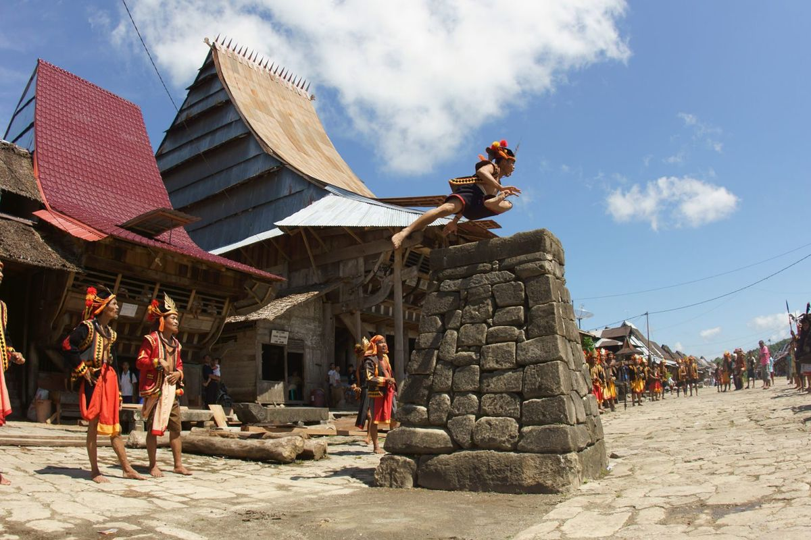
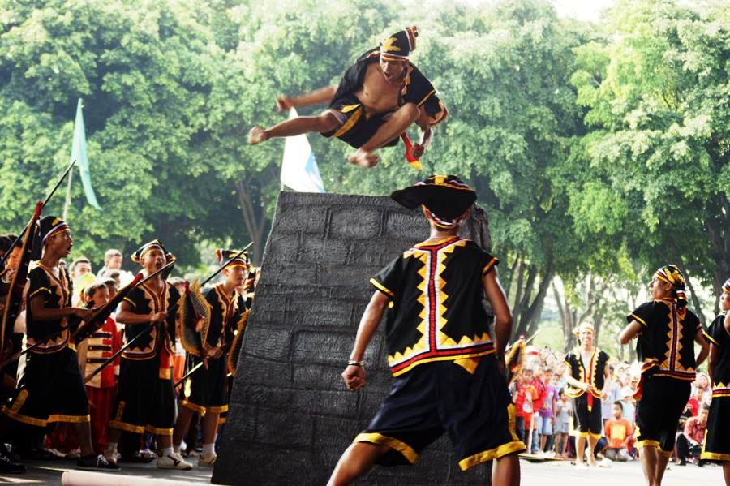

1. Gerbang Menuju Kedewasaan
Di Desa Bawomataluo, Fahombo bukan sekadar olahraga atau atraksi turis. Bagi pemuda Nias, berhasil melompati tumpukan batu setinggi 2 meter adalah **pengakuan sosial**. Tradisi ini bermula dari sejarah peperangan antar suku, di mana seorang prajurit harus mampu melompati pagar batu desa lawan untuk menyerang. Kini, Fahombo menjadi bukti bahwa seorang laki-laki telah siap memikul tanggung jawab dewasa.

2. Filosofi Menara Batu
Batu yang dilompati memiliki struktur unik berbentuk piramida terpancung. Permukaannya datar di bagian atas, namun sangat berbahaya jika kaki salah mendarat. Yang membuatnya langka adalah nilai **spiritulitasnya**; para pelompat biasanya melakukan ritual atau meminta doa restu leluhur agar tidak celaka. Mereka percaya, tanpa kekuatan mental dan restu nenek moyang, fisik yang kuat pun tidak akan mampu melewati batu tersebut.
"Bagi masyarakat Nias, melompati batu adalah cara menghormati sejarah. Setiap lompatan yang berhasil adalah penghormatan bagi ksatria-ksatria masa lalu yang menjaga tanah ini."